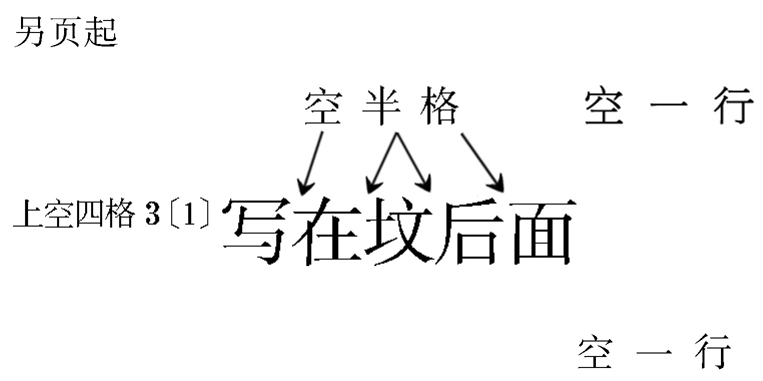
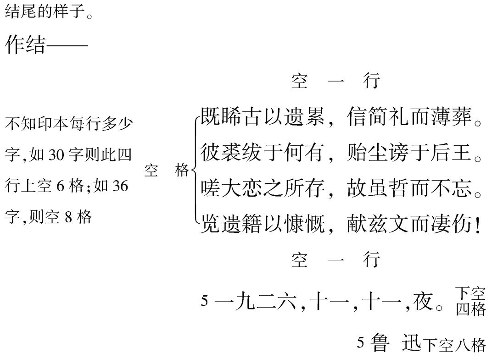

漱园兄：
前天写了一点东西，拟放在《坟》之后面，还想在《语丝》上先发表一回（本来《莽原》亦可，但怕太迟，离本书的发行已近，而纸面亦可惜），今附上致小峰一笺，请并稿送去，印后仍收回，交与排《坟》之印局。倘《坟》之出版期已近，则不登《语丝》亦可，请酌定。
首尾的式样，写一另纸，附上。
目录上也须将题目添上，但应与以上之本文的题目离开一行。
迅 十一，十三

5在听到我的杂文已经印成一半的消息的时候，我曾经……

261113
第11卷 · 一九二六年
漱园兄：
前天写了一点东西，拟放在《坟》之后面，还想在《语丝》上先发表一回（本来《莽原》亦可，但怕太迟，离本书的发行已近，而纸面亦可惜），今附上致小峰一笺，请并稿送去，印后仍收回，交与排《坟》之印局。倘《坟》之出版期已近，则不登《语丝》亦可，请酌定。
首尾的式样，写一另纸，附上。
目录上也须将题目添上，但应与以上之本文的题目离开一行。
迅 十一，十三

5在听到我的杂文已经印成一半的消息的时候，我曾经……
